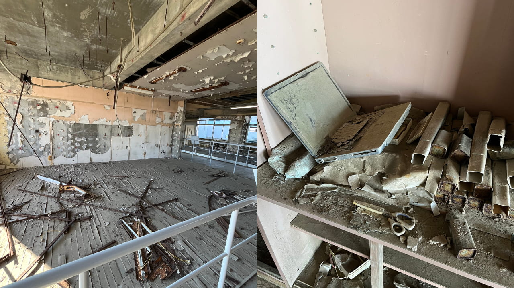

「2024年度春季 被災地のまちづくりを考え、発信するスタディツアー」にメンバーが参加しました。
2025年2月16日〜18日にこもれびメンバー2名が東洋大学ボランティア支援室主催の「2024年度春季 被災地のまちづくりを考え、発信するスタディツアー」に参加し、福島県を訪れました。
今回主に滞在したいわき市内は、復旧が完了しているように見受けられました。駅ビルが併設されているいわき駅、温泉街に位置する湯本駅、小名浜漁港など街並みからは震災の痕跡を感じることはありませんでした。
一方で福島第一原子力発電所が位置する双葉町には、倒壊した建物が多く残されていました。震災から10年以上経った現在でも、復旧には至っていない現状が見られました。
震災遺構として公開されている浪江町立請戸小学校には、津波の悲惨さがそのまま残されていました。
海が目の前にある立地でしたが、当時学校にいた人は全員避難することができました。そこには地域の方の助けがあったそうです。
今回の活動を通じて得た学びや気づきを、今後の活動にも活かしていきたいと思います。